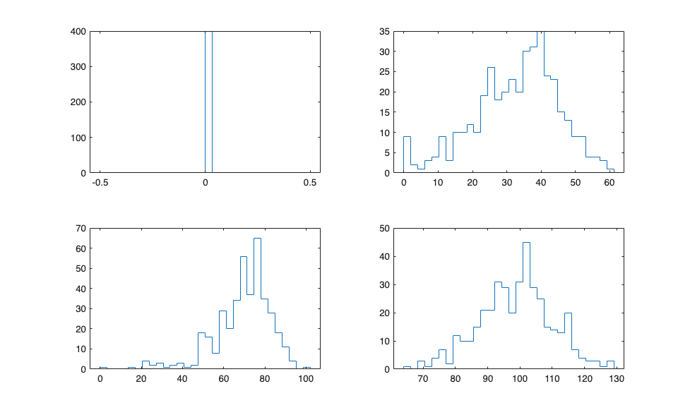
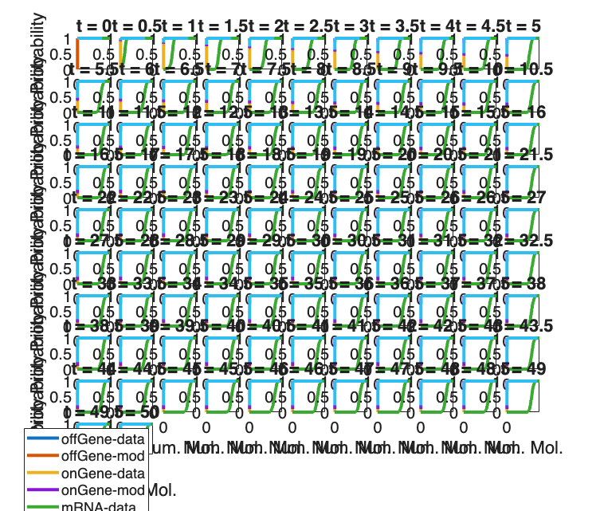
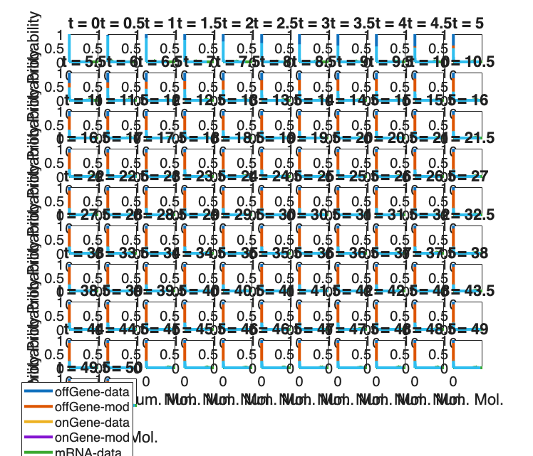
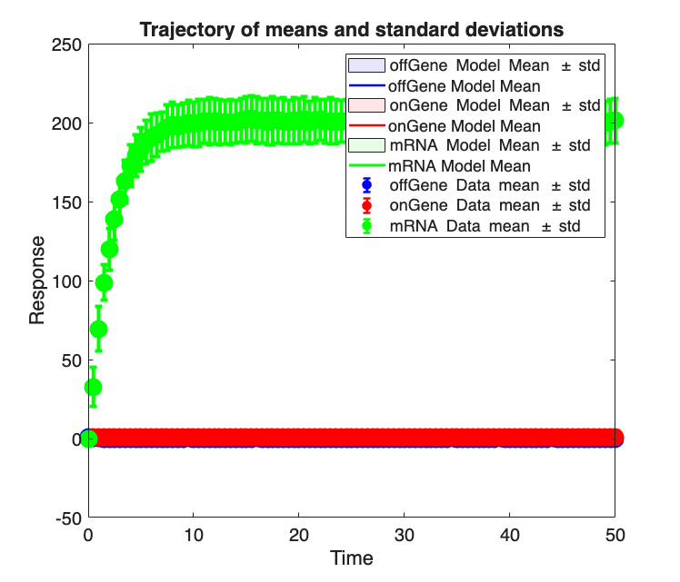
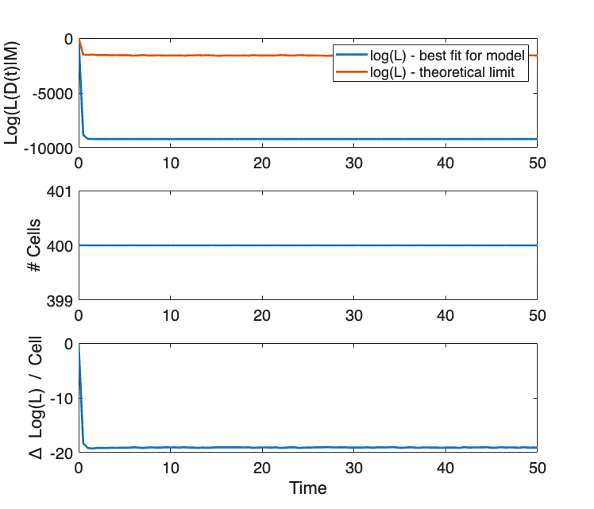

Contents
example_8b_LoadingandFittingData_SimulatingData
%%%%%%%%%%%%%%%%%%%%%%%%%%%%%%%%%%%%%%%%%%%%%%%%%%%%%%%%%%%%%%%%%%%%%%%%%%%
Section 2.3: Loading and fitting data
* Simulate data for testing
%%%%%%%%%%%%%%%%%%%%%%%%%%%%%%%%%%%%%%%%%%%%%%%%%%%%%%%%%%%%%%%%%%%%%%%%%%%
Preliminaries:
%clear %close all % example_1_CreateSSITModels % example_4_SolveSSITModels_FSP % View model summaries: STL1_FSP.summarizeModel %%%%%%%%%%%%%%%%%%%%%%%%%%%%%%%%%%%%%%%%%%%%%%%%%%%%%%%%%%%%%%%%%%%%%%%%%%%
Species:
offGene; IC = 1; discrete stochastic
onGene; IC = 0; discrete stochastic
mRNA; IC = 0; discrete stochastic
Reactions:
Reaction 1:
s1: 1*offGene --> 1*onGene
w1: kon * offGene
Reaction 2:
s2: 1*onGene --> 1*offGene
w2: onGene*koff/(1+Hog1)
Reaction 3:
s3: NULL --> 1*mRNA
w3: kr * onGene
Reaction 4:
s4: 1*mRNA --> NULL
w4: dr * mRNA
Input Signals:
Hog1(t) = (a0+a1*exp(-r1*t)*(1-exp(-r2*t))*(t>0))
Model Parameters:
{'kon' } {[2.0000e-01]}
{'koff'} {[2.0000e-01]}
{'kr' } {[ 10]}
{'dr' } {[ 5]}
{'a0' } {[ 5]}
{'a1' } {[ 10]}
{'r1' } {[4.0000e-03]}
{'r2' } {[1.0000e-02]}
Create a complicated model to simulate noisy real data
%%%%%%%%%%%%%%%%%%%%%%%%%%%%%%%%%%%%%%%%%%%%%%%%%%%%%%%%%%%%%%%%%%%%%%%%%%% % Create a copy of the STL1 model for simulation: STL1_sim_model = STL1_FSP; % Update propensity function for the gene activation reaction: STL1_sim_model.propensityFunctions{1} = 'offGene * Hog1'; % Define the time-varying TF/MAPK input signal with added noise: STL1_sim_model.inputExpressions = {'Hog1',... 'a0 + a1*exp(-r1*t)*(1-exp(-r2*t))*(t>0) + sig'}; % Add the new parameters from the TF/MAPK input signal: STL1_sim_model.parameters = ({'koff',0.01; 'kr',100; 'dr',0.5; ... 'kleak',0.5; 'a0',0.01; 'a1',10; 'r1',0.004; 'r2',.01; 'sig',randn(1)*5}); % Note that the simulated data will differ each time it is run. % Set stoichiometry of reactions: STL1_sim_model.stoichiometry = [-1,1,0,0,0;... 1,-1,0,0,0;... 0,0,1,-1,1]; % Set propensity functions: STL1_sim_model.propensityFunctions{5} = 'kleak'; % Print a summary of STL1 Model: STL1_sim_model.summarizeModel %%%%%%%%%%%%%%%%%%%%%%%%%%%%%%%%%%%%%%%%%%%%%%%%%%%%%%%%%%%%%%%%%%%%%%%%%%%
Species:
offGene; IC = 1; discrete stochastic
onGene; IC = 0; discrete stochastic
mRNA; IC = 0; discrete stochastic
Reactions:
Reaction 1:
s1: 1*offGene --> 1*onGene
w1: offGene * Hog1
Reaction 2:
s2: 1*onGene --> 1*offGene
w2: onGene*koff/(1+Hog1)
Reaction 3:
s3: NULL --> 1*mRNA
w3: kr * onGene
Reaction 4:
s4: 1*mRNA --> NULL
w4: dr * mRNA
Reaction 5:
s5: NULL --> 1*mRNA
w5: kleak
Input Signals:
Hog1(t) = a0 + a1*exp(-r1*t)*(1-exp(-r2*t))*(t>0) + sig
Model Parameters:
{'koff' } {[1.0000e-02]}
{'kr' } {[ 100]}
{'dr' } {[5.0000e-01]}
{'kleak'} {[5.0000e-01]}
{'a0' } {[1.0000e-02]}
{'a1' } {[ 10]}
{'r1' } {[4.0000e-03]}
{'r2' } {[1.0000e-02]}
{'sig' } {[6.3937e+00]}
Generate simulated time-varying STL1 yeast data for fitting later
%%%%%%%%%%%%%%%%%%%%%%%%%%%%%%%%%%%%%%%%%%%%%%%%%%%%%%%%%%%%%%%%%%%%%%%%%%% % Number of independent data sets to generate: STL1_sim_model.ssaOptions.Nexp = 2; % Number of cells to include at each time point for each data set: STL1_sim_model.ssaOptions.nSimsPerExpt = 200; % Ensure the solution scheme is set to FSP (default): STL1_sim_model.solutionScheme = 'FSP'; % This function compiles and stores the given reaction propensities % into symbolic expression functions that use sparse matrices to % operate on the system based on the current state. The functions are % stored with the given prefix, in this case, 'STL1_FSP' STL1_sim_model = STL1_sim_model.formPropensitiesGeneral('STL1_sim_FSP'); % Set FSP 1-norm error tolerance: STL1_sim_model.fspOptions.fspTol = 1e-4; % Guess initial bounds on FSP StateSpace: STL1_sim_model.fspOptions.bounds = [2,2,400]; % Have FSP approximate the steady state for the initial distribution % by finding the eigenvector corresponding to the smallest magnitude % eigenvalue (i.e., zero, for generator matrix A, d/dtP(t)=AP(t)): STL1_sim_model.fspOptions.initApproxSS = false; % Solve Model: [STL1_sim_FSPsoln,STL1_sim_model.fspOptions.bounds] = STL1_sim_model.solve; % Generate and save data: dataTable = STL1_sim_model.sampleDataFromFSP(STL1_sim_FSPsoln,... 'data/STL1_sim.csv'); % Plot data as histograms: for i = 1:4 subplot(2,2,i) % Switch to current subplot histogram(dataTable.exp1_s3(dataTable.time==STL1_sim_model.tSpan(i)),.... 30,"DisplayStyle","stairs") end %%%%%%%%%%%%%%%%%%%%%%%%%%%%%%%%%%%%%%%%%%%%%%%%%%%%%%%%%%%%%%%%%%%%%%%%%%%
FSP Samples saved to data/STL1_sim.csv

Load time-varying STL1 yeast data
* Now load simulated data and associate it with the models we set in example_1_CreateSSITModels
%%%%%%%%%%%%%%%%%%%%%%%%%%%%%%%%%%%%%%%%%%%%%%%%%%%%%%%%%%%%%%%%%%%%%%%%%%% % Make new copies of our model: STL1_sim_data = STL1_FSP; % Load the simulated data, matching the species name of the model % (e.g., the model species 'offGene' is column 'exp1_s1' in the file): STL1_sim_data = STL1_sim_data.loadData('data/STL1_sim.csv',... {'offGene','exp1_s1';'onGene','exp1_s2';'mRNA','exp1_s3'}); % This plot is unnecessary, as the model parameters have not been fit to % the data yet. However, it illustrates the improvement to come later: STL1_sim_data.makeFitPlot
ans =
1×4 cell array
{1×1 Figure} {1×1 Figure} {1×1 Figure} {1×1 Figure}




Save models with loaded data
saveNames = unique({'STL1_sim_model'
'STL1_sim_data'});
save('example_8b_LoadingandFittingData_SimulatingData',saveNames{:})